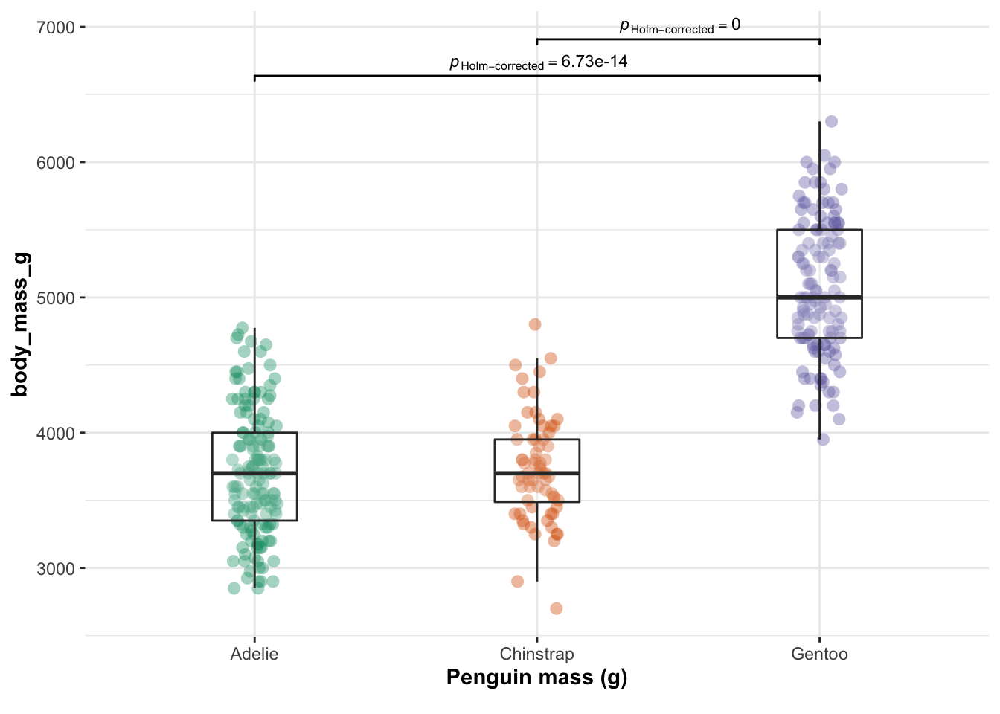

STAT-462 Worked questions
hlg5155
2022-04-27
All the questions and plots here are on the Palmer Penguins dataset, to carry on the penguin health theme of the course. You don’t need to do this, but so you can see where each command comes from, I have also added the package e.g. ggstatsplott::gghistostats is the same as library(ggstatsplot) followed by gghistostats()
1 Load Data and Packages
# Important core packages
library(tidyverse)
library(knitr)
library(rmarkdown)
library(skimr)
library(Stat2Data)
library(readxl)
library(ggpubr)
# Regression packages
library(olsrr)
library(Stat2Data)
library(nortest)
library(lmtest)
library(IMTest)
library(MASS)
library(visreg)
library(ggstatsplot)
# Plotting packages
library(lattice)
library(RColorBrewer)
library(viridis)
library(corrplot)
library(plotly)
library(car)
library(GGally)
# Datasets
library(ISLR) # contains a credit dataset
library(yarrr) # contains a toy dataset about pirates
library(palmerpenguins) # contains the penguin dataset2 Load data
I use the data command because the data already exists inside Note, because the data is already “pre-loaded into R”, I don’t need to give it a variable name. In fact this command loads TWO datasets: penguins and penguins_raw. If in doubt see the help file e.g. ?penguins.
#?penguins
data("penguins")skimr::skim(penguins)| Name | penguins |
| Number of rows | 344 |
| Number of columns | 8 |
| _______________________ | |
| Column type frequency: | |
| factor | 3 |
| numeric | 5 |
| ________________________ | |
| Group variables | None |
Variable type: factor
| skim_variable | n_missing | complete_rate | ordered | n_unique | top_counts |
|---|---|---|---|---|---|
| species | 0 | 1.00 | FALSE | 3 | Ade: 152, Gen: 124, Chi: 68 |
| island | 0 | 1.00 | FALSE | 3 | Bis: 168, Dre: 124, Tor: 52 |
| sex | 11 | 0.97 | FALSE | 2 | mal: 168, fem: 165 |
Variable type: numeric
| skim_variable | n_missing | complete_rate | mean | sd | p0 | p25 | p50 | p75 | p100 | hist |
|---|---|---|---|---|---|---|---|---|---|---|
| bill_length_mm | 2 | 0.99 | 43.92 | 5.46 | 32.1 | 39.23 | 44.45 | 48.5 | 59.6 | ▃▇▇▆▁ |
| bill_depth_mm | 2 | 0.99 | 17.15 | 1.97 | 13.1 | 15.60 | 17.30 | 18.7 | 21.5 | ▅▅▇▇▂ |
| flipper_length_mm | 2 | 0.99 | 200.92 | 14.06 | 172.0 | 190.00 | 197.00 | 213.0 | 231.0 | ▂▇▃▅▂ |
| body_mass_g | 2 | 0.99 | 4201.75 | 801.95 | 2700.0 | 3550.00 | 4050.00 | 4750.0 | 6300.0 | ▃▇▆▃▂ |
| year | 0 | 1.00 | 2008.03 | 0.82 | 2007.0 | 2007.00 | 2008.00 | 2009.0 | 2009.0 | ▇▁▇▁▇ |
Check column names
names(penguins)## [1] "species" "island" "bill_length_mm"
## [4] "bill_depth_mm" "flipper_length_mm" "body_mass_g"
## [7] "sex" "year"3 Descriptive questions
3.1 What is the unit of analysis
The “thing” the study is about. I used the help file, ?penguins and ?penguinsraw to show that the unit of analysis is a single penguin. There are 151 penguins in the sample. n=151 (there is one missing).
3.2 What is a reasonable population?
This is the boundaries that the study can be extrapoled to.
Again, using the helpfile, ?penguins: The study collected data on nesting observations, penguin size data, and isotope measurements from blood samples for foraging adult Adélie, Chinstrap, and Gentoo near Palmer Station, Antarctica.
I would say a reasonable population would be either adult Antarctic penguins of those breeds (maybe splitting into a smaller geographic area after consulting with subject experts). If I split the sample into individual species (I do this later on), then I expect I might be able to use these results for all populations of that penguin breed, again after consulting with experts.
3.3 What variables exist in the dataset?
Here is our dataset:
#?penguins
data("penguins")
skimr::skim(penguins)| Name | penguins |
| Number of rows | 344 |
| Number of columns | 8 |
| _______________________ | |
| Column type frequency: | |
| factor | 3 |
| numeric | 5 |
| ________________________ | |
| Group variables | None |
Variable type: factor
| skim_variable | n_missing | complete_rate | ordered | n_unique | top_counts |
|---|---|---|---|---|---|
| species | 0 | 1.00 | FALSE | 3 | Ade: 152, Gen: 124, Chi: 68 |
| island | 0 | 1.00 | FALSE | 3 | Bis: 168, Dre: 124, Tor: 52 |
| sex | 11 | 0.97 | FALSE | 2 | mal: 168, fem: 165 |
Variable type: numeric
| skim_variable | n_missing | complete_rate | mean | sd | p0 | p25 | p50 | p75 | p100 | hist |
|---|---|---|---|---|---|---|---|---|---|---|
| bill_length_mm | 2 | 0.99 | 43.92 | 5.46 | 32.1 | 39.23 | 44.45 | 48.5 | 59.6 | ▃▇▇▆▁ |
| bill_depth_mm | 2 | 0.99 | 17.15 | 1.97 | 13.1 | 15.60 | 17.30 | 18.7 | 21.5 | ▅▅▇▇▂ |
| flipper_length_mm | 2 | 0.99 | 200.92 | 14.06 | 172.0 | 190.00 | 197.00 | 213.0 | 231.0 | ▂▇▃▅▂ |
| body_mass_g | 2 | 0.99 | 4201.75 | 801.95 | 2700.0 | 3550.00 | 4050.00 | 4750.0 | 6300.0 | ▃▇▆▃▂ |
| year | 0 | 1.00 | 2008.03 | 0.82 | 2007.0 | 2007.00 | 2008.00 | 2009.0 | 2009.0 | ▇▁▇▁▇ |
or alternatively
glimpse(penguins)## Rows: 344
## Columns: 8
## $ species <fct> Adelie, Adelie, Adelie, Adelie, Adelie, Adelie, Adel…
## $ island <fct> Torgersen, Torgersen, Torgersen, Torgersen, Torgerse…
## $ bill_length_mm <dbl> 39.1, 39.5, 40.3, NA, 36.7, 39.3, 38.9, 39.2, 34.1, …
## $ bill_depth_mm <dbl> 18.7, 17.4, 18.0, NA, 19.3, 20.6, 17.8, 19.6, 18.1, …
## $ flipper_length_mm <int> 181, 186, 195, NA, 193, 190, 181, 195, 193, 190, 186…
## $ body_mass_g <int> 3750, 3800, 3250, NA, 3450, 3650, 3625, 4675, 3475, …
## $ sex <fct> male, female, female, NA, female, male, female, male…
## $ year <int> 2007, 2007, 2007, 2007, 2007, 2007, 2007, 2007, 2007…Our data is comprised of a sample of 344 penguins, with variables:
species: factor, nominal categorical Penguin species (Adélie, Chinstrap and Gentoo)island: factor, nominal categorical Island in Palmer Archipelago, Antarctica (Biscoe, Dream or Torgersen) that the penguin was observed onbill_length_mm: numeric Bill (beak) length (millimeters)bill_length_mm: numeric Bill depth (millimeters)flipper_length_mm: integer, numeric Flipper length (millimeters)body_mass_g: integer, numeric Body mass (grams)sexfactor, nominal categorical Penguin sex (female, male)yearinteger, numeric Study year (2007, 2008, or 2009)
Most of our data stored as an integer is not “true” integer data e.g. it’s physically possible to have a body mass of 45.295g. So I will convert my integer columns to numeric
# take all the integers in penguins, convert to float numeric and overwrite.
penguins <- dplyr::mutate_if( penguins,
is.integer, as.numeric)
# and check - yep, dbl means "double float"
glimpse(penguins)## Rows: 344
## Columns: 8
## $ species <fct> Adelie, Adelie, Adelie, Adelie, Adelie, Adelie, Adel…
## $ island <fct> Torgersen, Torgersen, Torgersen, Torgersen, Torgerse…
## $ bill_length_mm <dbl> 39.1, 39.5, 40.3, NA, 36.7, 39.3, 38.9, 39.2, 34.1, …
## $ bill_depth_mm <dbl> 18.7, 17.4, 18.0, NA, 19.3, 20.6, 17.8, 19.6, 18.1, …
## $ flipper_length_mm <dbl> 181, 186, 195, NA, 193, 190, 181, 195, 193, 190, 186…
## $ body_mass_g <dbl> 3750, 3800, 3250, NA, 3450, 3650, 3625, 4675, 3475, …
## $ sex <fct> male, female, female, NA, female, male, female, male…
## $ year <dbl> 2007, 2007, 2007, 2007, 2007, 2007, 2007, 2007, 2007…3.4 Describe a single variable (including W-S Normality)
Describe the body mass of Palmer Penguins
ggstatsplot::gghistostats(data=penguins,
x=body_mass_g,
results.subtitle=FALSE,
normal.curve = TRUE,
xlab = "Penguin mass (g)",
title = "Palmer penguin body mass")This histogram shows the distribution of penguin weights in grams for the sample of 344 Adélie, Chinstrap and Gentoo penguins in the Palmer penguin dataset.
The distribution looks approximately univariate with a mean penguin mass of 4201.75g. There does appear to be some left skew:
ggpubr::ggqqplot(penguins$body_mass_g,col="blue")WS.test <- shapiro.test(penguins$body_mass_g)
WS.test##
## Shapiro-Wilk normality test
##
## data: penguins$body_mass_g
## W = 0.95921, p-value = 3.679e-08- H0 : The sample comes from a population which has a normal distribution. Wilks Shapiro test statistic would be close to 1: \(W = 1\)
- H1 : The sample is unlikely to come from a population which has a normal distribution. Wilks Shapiro test statistic would be LESS than 1: \(W < 1\)
The results above suggest that the test-statistic, W is 0.9592112 (relatively normal), but the likelyhood of seeing this result with a large sample of 344 penguins is exceptionally small (p = WS.test$p.value). It is important to note that the sample is large, so this test is very sensitive.
Finally, I expect that that the data is not fully independent, which would affect the normality of test results. The dataset is comprised of three individual species. Breaking these apart:
ggbetweenstats(data = penguins,
x = species,
y = body_mass_g ,
plot.type = "box",xlab = "Penguin mass (g)",
centrality.point.args=list(color = "darkblue")
,pairwise.display = "significant",centrality.plotting=FALSE,
results.subtitle = FALSE)
The data is clearly not independent. So from now onwards I will simply select a single species.
adelie <- dplyr::filter(penguins, species=="Adelie")
skim(adelie)| Name | adelie |
| Number of rows | 152 |
| Number of columns | 8 |
| _______________________ | |
| Column type frequency: | |
| factor | 3 |
| numeric | 5 |
| ________________________ | |
| Group variables | None |
Variable type: factor
| skim_variable | n_missing | complete_rate | ordered | n_unique | top_counts |
|---|---|---|---|---|---|
| species | 0 | 1.00 | FALSE | 1 | Ade: 152, Chi: 0, Gen: 0 |
| island | 0 | 1.00 | FALSE | 3 | Dre: 56, Tor: 52, Bis: 44 |
| sex | 6 | 0.96 | FALSE | 2 | fem: 73, mal: 73 |
Variable type: numeric
| skim_variable | n_missing | complete_rate | mean | sd | p0 | p25 | p50 | p75 | p100 | hist |
|---|---|---|---|---|---|---|---|---|---|---|
| bill_length_mm | 1 | 0.99 | 38.79 | 2.66 | 32.1 | 36.75 | 38.8 | 40.75 | 46.0 | ▁▆▇▆▁ |
| bill_depth_mm | 1 | 0.99 | 18.35 | 1.22 | 15.5 | 17.50 | 18.4 | 19.00 | 21.5 | ▂▆▇▃▁ |
| flipper_length_mm | 1 | 0.99 | 189.95 | 6.54 | 172.0 | 186.00 | 190.0 | 195.00 | 210.0 | ▁▆▇▅▁ |
| body_mass_g | 1 | 0.99 | 3700.66 | 458.57 | 2850.0 | 3350.00 | 3700.0 | 4000.00 | 4775.0 | ▅▇▇▃▂ |
| year | 0 | 1.00 | 2008.01 | 0.82 | 2007.0 | 2007.00 | 2008.0 | 2009.00 | 2009.0 | ▇▁▇▁▇ |
- New unit of analysis: an individual Adelie penguin -New reasonable population: All Adélie penguins - although I would want to talk to a biologist before extrapolating results beyond either the specific penguin colony or Antarctia.
ggstatsplot::gghistostats(data=adelie,
x=body_mass_g,
results.subtitle=FALSE,
normal.curve = TRUE,
xlab = "mass (g)",
title = "Palmer penguin body mass: Species- Adelie")ggpubr::ggqqplot(adelie$body_mass_g,col="blue")WS.test <- shapiro.test(adelie$body_mass_g)
WS.test##
## Shapiro-Wilk normality test
##
## data: adelie$body_mass_g
## W = 0.98071, p-value = 0.0324- H0 : The sample comes from a population which has a normal distribution. Wilks Shapiro test statistic would be close to 1: \(W = 1\)
- H1 : The sample is unlikely to come from a population which has a normal distribution. Wilks Shapiro test statistic would be LESS than 1: \(W < 1\)
The results above suggest that the sampled test-statistic, W is 0.9807079 close to Normal. The p-value is still relatively low at p = WS.test$p.value, but good enough to proceed.
3.5 Describe correlations
Describe the correlation between Adelie penguin’s mass vs other variables
GGally::ggpairs( adelie[ , sapply(adelie,is.numeric)])For our sample, there appears to be moderate positive correlation between adelie penguin mass and both bill depth and flipper length. There is very little correlation with bill length.
4 Simple Linear Models
4.1 Set up a linear model
Create a linear model between Adelie Penguin mass and Flipper Length
Unit of analysis: An individual Adelie penguin
Response (Y) : Penguin mass
Predictor (X1) : Flipper length
Model1 <- lm(body_mass_g ~ flipper_length_mm, data=adelie)# INSTALL GGSIDE IN THE CONSOLE
ggstatsplot::ggscatterstats(adelie,
x=flipper_length_mm,
y=body_mass_g,
results.subtitle=FALSE,
xlab="Flipper length (mm)",
ylab="body mass (g)")The relationship can be expressed as:
equatiomatic::extract_eq(Model1,use_coefs = TRUE)\[ \operatorname{\widehat{body\_mass\_g}} = -2535.84 + 32.83(\operatorname{flipper\_length\_mm}) \]
Model1.Summary <- olsrr::ols_regress(Model1)
Model1.Summary## Model Summary
## ------------------------------------------------------------------
## R 0.468 RMSE 406.556
## R-Squared 0.219 Coef. Var 10.986
## Adj. R-Squared 0.214 MSE 165288.105
## Pred R-Squared 0.200 MAE 330.120
## ------------------------------------------------------------------
## RMSE: Root Mean Square Error
## MSE: Mean Square Error
## MAE: Mean Absolute Error
##
## ANOVA
## -------------------------------------------------------------------------
## Sum of
## Squares DF Mean Square F Sig.
## -------------------------------------------------------------------------
## Regression 6914506.061 1 6914506.061 41.833 0.0000
## Residual 24627927.713 149 165288.105
## Total 31542433.775 150
## -------------------------------------------------------------------------
##
## Parameter Estimates
## ------------------------------------------------------------------------------------------------------
## model Beta Std. Error Std. Beta t Sig lower upper
## ------------------------------------------------------------------------------------------------------
## (Intercept) -2535.837 964.798 -2.628 0.009 -4442.291 -629.382
## flipper_length_mm 32.832 5.076 0.468 6.468 0.000 22.801 42.862
## ------------------------------------------------------------------------------------------------------4.2 Describe the intercept
If our sample regression is:
\[ \operatorname{\widehat{y}} = b_{0} + b_{1}x \]
Then the intercept is the MODELLED AVERAGE value of y when x is 0.
In our case, the intercept is the average mass of penguins with no flippers (zero flipper length), which corresponds to -2535.8368022 grams.
This is extrapolating far beyond the observed data and thus has no physical meaning. Equally, a penguin with no flippers is likely to have other physical differences which impact how much it weighs. The relationship is no longer likely to be linear.
4.3 Describe the slope
If our sample regression is:
\[ \operatorname{\widehat{y}} = b_{0} + b_{1}x \]
Then the gradient/slope is the change in the MODELLED AVERAGE value of y with a unit increase in x.
The slope suggests that as the flipper length increases by 1mm, the mass increases by 32.8316898 grams.
4.4 R2 - how much variability is explained.
R2 is the percentage of the variability in our response that can be “explained” by our predictor. For example 96% of the variability in building height can be “explained” by how many floors/stories is has.
R2 is also known as the coefficient of determination.
See here for more: https://www.khanacademy.org/math/ap-statistics/bivariate-data-ap/assessing-fit-least-squares-regression/a/r-squared-intuition
We can see from this model summary that 21.9212826% of the variability in our sampled Penguin mass can be explained by flipper length.
5 Hypothesis test on slope
5.1 T-test on slope, Is \(\beta_{1} = 0\)?
AKA IS THERE A LINEAR RELATIONSHIP BETWEEN…..
Is there a linear relationship between mass and flipper length? (AKA is \(\beta_{1} = 0\)?)
See here for a worked example in detail: https://www.econometrics-with-r.org/5-1-testing-two-sided-hypotheses-concerning-the-slope-coefficient.html
Remember that
\[ t = \frac{Estimated.Value − Hypothesized.Value}{Standard.Error.Of.Estimate} \]
If x does not impact y, then the slope of our population scatterplot would be zero. E.g. x does not explain any of the variability in y. So in this case, we are assessing how likely it is to see our sample in a world where the TRUE population slope is zero.
So for our null hypothesis, we set up a world where the population slope is zero. We don’t care if there is a negative or a positive slope here, so this is a two sided T-test.
- H_0_ : \(\beta_{1} = 0\)
- H_1_ : \(\beta_{1} != 0\) AKA our sample has an unusual slope if H0 really was true
So for us:
\[ t = \frac{b_1 − \beta_{1}}{se(b_1)} \] So
\[ t = \frac{b_1 − 0}{se(b_1)}=\frac{32.832}{5.076}=6.468085 \]
This is such a common question that you can simply see this T value in the R summary output. THE P-VALUE IN THIS IS FOR A TWO SIDED TEST.
summary(Model1)##
## Call:
## lm(formula = body_mass_g ~ flipper_length_mm, data = adelie)
##
## Residuals:
## Min 1Q Median 3Q Max
## -875.68 -331.10 -14.53 265.74 1144.81
##
## Coefficients:
## Estimate Std. Error t value Pr(>|t|)
## (Intercept) -2535.837 964.798 -2.628 0.00948 **
## flipper_length_mm 32.832 5.076 6.468 1.34e-09 ***
## ---
## Signif. codes: 0 '***' 0.001 '**' 0.01 '*' 0.05 '.' 0.1 ' ' 1
##
## Residual standard error: 406.6 on 149 degrees of freedom
## (1 observation deleted due to missingness)
## Multiple R-squared: 0.2192, Adjusted R-squared: 0.214
## F-statistic: 41.83 on 1 and 149 DF, p-value: 1.343e-09We can see that the probability is exceedingly small, so we have a lot of evidence to reject H_0_ and suggest there is a relationship between body mass and flipper length.
5.2 T-test on slope, calculate p for 2 sided test
Let’s choose an example with a larger p value.
Is there a relationship between body mass and study year, at a 10% critical significance?
- H_0_ : \(\beta_{1} = 0\)
- H_1_ : \(\beta_{1} != 0\)
We have a 10% significance level. So let’s imagine a t-distribution

Model2 <- lm(body_mass_g ~ year, data=adelie)
summary(Model2)##
## Call:
## lm(formula = body_mass_g ~ year, data = adelie)
##
## Residuals:
## Min 1Q Median 3Q Max
## -850.99 -342.80 -17.35 307.20 1090.38
##
## Coefficients:
## Estimate Std. Error t value Pr(>|t|)
## (Intercept) 36563.84 91918.68 0.398 0.691
## year -16.37 45.78 -0.358 0.721
##
## Residual standard error: 459.9 on 149 degrees of freedom
## (1 observation deleted due to missingness)
## Multiple R-squared: 0.0008571, Adjusted R-squared: -0.005849
## F-statistic: 0.1278 on 1 and 149 DF, p-value: 0.7212You can see from this that the summary t-statistic is -0.358 and the associated p value is 0.721. Let’s show where it comes from.
\[ t = \frac{b_1 − 0}{se(b_1)}=\frac{-16.37}{45.78}=-0.3575797 \]
and
pt(-0.3575797,df=149,lower.tail = TRUE)## [1] 0.3605819pt(-0.3575797,df=149,lower.tail = FALSE)## [1] 0.6394181Here we can see that 36% of the T-distribution is on the lower side of the test statistic (e.g. by random chance we expect 36% of slopes to be smaller than -16.37) and 64% of the T-distribution is on the upper side of the test statistic. As the red line is in the white zone, we do not have enough evidence to reject H0.
Alternatively, as the T-distribution is symmetrical, we can simply multiply the p-value by two:
pt(-0.3575797,df=149,lower.tail = TRUE) * 2## [1] 0.7211639E.g. 0.721 is greater than 0.1 so we do not have enough evidence to reject H0. This is what the R summary does.
SO R-SUMMARY T-TEST STATISTICS ARE TWO SIDED e.g. H1: B1 != 0 or B0 !=0 You can actually see this directly in the summary, Pr(>|t|) e.g. the p value for negative t and positive t.
5.3 T-test on slope, one sided & \(\beta_{1}\) is a number.
A famous penguin researcher thinks that the slope between mass and flipper length is at least 40 mm/g. Given your sample, do you believe this is true, with a critical significance of 5%
We can no longer use the R summary.
- H_0_ : \(\beta_{1} = 40\)
If our person’s statement really was true, then at a MINIMUM, it should be 40 mm/g. So it would be pretty typical to get a higher slope from our sample. What would be unusual would be to get a lower slope.
- H_1_ : \(\beta_{1} < 40\) It would be unusual to see a slope as low as our sample if H0 really was true.
The reason that H0 is an equals is that H0 is always the model we set up to test our scenario.
OK, so here is the point where I find drawing the diagram helps. So if the scientist was correct, then higher slopes are to be expected. We only care if it is low.

\[ t = \frac{b_1 − 40}{se(b_1)}=\frac{32.832-40}{5.076}=-1.412136 \]
So in this case, we use lower.tail=TRUE
pt(-1.412136,df=149,lower.tail = TRUE)## [1] 0.07999751The p-value is 0.08 - as this is above 0.05, we do not have enough evidence to reject H0. E.g.
x=seq(-4,4,length=2000)
plot(x,dt(x,149),type="l",lwd=2,col="blue",
xlab="t-statistic",ylab="")
polygon(c(lower,x,upper),c(0,dt(x,149),0),col="gray")
lower <- qt(0.05,149)
x=seq(lower,4,length=2000)
polygon(c(lower,x,4),c(0,dt(x,149),0),col="white")
text(0,0.05,"95%");text(-3,0.05,"5%");
abline(v=-1.412136,col="red",lwd=2)
text(-2.3,0.3,"<- 7.973%",col="red");text(-0.7,0.3,"92% ->",col="red")To recap:
A famous penguin researcher thinks that the slope between mass and flipper length is at least 40 mm/g. Given your sample, do you believe this is true, with a critical significance of 5%
- H_0_ : \(\beta_{1} = 40\)
- H_1_ : \(\beta_{1} < 40\) It would be unusual to see a slope as low as our sample if H0 really was true.
We found a 7% chance of seeing a slope lower or equal to our sample. As this is above our 5% critical significance, we do not have enough evidence to reject H0. Therefore our sample is likely consistent with the scientist’s statement.
5.4 Using a confidence interval on the slope
It’s a bit more convoluted, but just as easy to use a confidence interval instead of a t-test. Is the slope 0 at a critical significance of 5%?
- H_0_ : \(\beta_{1} = 40\)
- H_1_ : \(\beta_{1} < 40\) It would be unusual to see a slope as low as our sample if H0 really was true.
ols_regress(Model1)## Model Summary
## ------------------------------------------------------------------
## R 0.468 RMSE 406.556
## R-Squared 0.219 Coef. Var 10.986
## Adj. R-Squared 0.214 MSE 165288.105
## Pred R-Squared 0.200 MAE 330.120
## ------------------------------------------------------------------
## RMSE: Root Mean Square Error
## MSE: Mean Square Error
## MAE: Mean Absolute Error
##
## ANOVA
## -------------------------------------------------------------------------
## Sum of
## Squares DF Mean Square F Sig.
## -------------------------------------------------------------------------
## Regression 6914506.061 1 6914506.061 41.833 0.0000
## Residual 24627927.713 149 165288.105
## Total 31542433.775 150
## -------------------------------------------------------------------------
##
## Parameter Estimates
## ------------------------------------------------------------------------------------------------------
## model Beta Std. Error Std. Beta t Sig lower upper
## ------------------------------------------------------------------------------------------------------
## (Intercept) -2535.837 964.798 -2.628 0.009 -4442.291 -629.382
## flipper_length_mm 32.832 5.076 0.468 6.468 0.000 22.801 42.862
## ------------------------------------------------------------------------------------------------------The ols regress output gives you the 95% confidence interval on the slope. AKA What range of values you expect the TRUE population slope to lie between.
We can see that the 95% confidence interval ON THE SLOPE is between 22.801 and 42.862 mm/g. As there are values greater than 35 mm/g inside the confidence interval, it would be reasonable to agree with the scientist’s theory. E.g. we don’t have evidence to suggest our sample slope would always be lower than 40 mm/g.
So we do not have evidence to reject H0.
5.5 F-test on slope, Is \(\beta_{1} = 0\)?
If we simply want to see if our model is explaining any variation in y (e.g. is our predictor explaining the variability in our response), we can use an F test.
Is there a relationship between body mass and study year, at a 1% critical significance?
anova(Model2)- H_0_ : \(\beta_{1} = 0\)
- H_1_ : \(\beta_{1} != 0\)
The test statistic is the F statistic.
As always, the P-value is obtained by answering the question: “What is the probability that we’d get an F* statistic as large as we did, if the null hypothesis is true?”
The P-value is determined by comparing F* to an F distribution with 1 numerator degree of freedom and n-2 denominator degrees of freedom.
Here we can see that the p-value is 0.72, which is well above 0.01. So we choose H0. We can confirm that there is no evidence to suggest a relationship between body mass and study year.
5.6 Is the F test one tailed or two tailed?
This is a common confusion! See http://daniellakens.blogspot.com/2016/04/one-sided-f-tests-and-halving-p-values.html
and https://psycnet.apa.org/record/1981-00280-001: “I pointed out to my student that although t distributions and F distributions each have probability values associated with both tails of their respective curves, the curves bear an exponential relationship, not a linear one. I reminded them that for d.f. = l/n, F = P. Thus, while values of t can be both positive and negative, values of F are limited to positive numbers. They saw the point immediately, and told me that in the case of a t curve, the areas contained in, for example, the extreme 5% of each of the two tails, positive plus negative, would be combined and found in one tail of the F curve, the tail of the curve for the values of F greater than one. I agreed and then asked them what the probability associated with an F of that size would be. It was clear to them that the area beneath the F curve which contained the 5% end of the positive tail of the corresponding t curve and the 5% end of the negative tail of the t curve, was 10%. Now they understood why they should have compared the F values of his anlyses with significance levels corresponding to 10%, not 5%-the Ftest is a one-tailed two-tailed test”
6 Hypothesis test on the intercept
6.1 T-test on intercept. Is \(\beta_{0} = 0\)?
For our model 1, is there evidence to suggest that penguins with no flippers have greater than zero weight, with a critical significance of 1%?
Not the most useful real life question.. Remember that
\[ mass = \beta_0+\beta_{1}Flipper.Length \]
If a penguin has no flippers then x = 0 and mass = \(\beta_0\). So the Intercept of our population scatterplot would be zero. So in this case, we are assessing how likely it is to see our sample in a world where the TRUE population intercept is zero.
\[ t = \frac{Estimated.Value − Hypothesized.Value}{Standard.Error.Of.Estimate} \]
So for us:
\[ t = \frac{b_0 − \beta_{0}}{se(b_0)} \]
For our null hypothesis, we set up a world where the population intercept is zero. We don’t care if there is a negative or a positive intercept here, so this is a two sided T-test.
- H_0_ : \(\beta_{0} = 0\)
- H_1_ : \(\beta_{1} != 0\) AKA our sample has an unusual intercept if H0 really was true
\[ t = \frac{-2535.837 − 0}{964.798}=-2.628 \] And because the test is two sided, we look at 2 x the associated p value (see slope version for why)
2*pt(-2.628,df=149)## [1] 0.009488051As our p value of 0.009 is just below 0.01, we have enough evidence to reject the null hypothesis and suggest that the intercept is not zero. JUST!
We could also do this by calculating the 99% confidence interval:
\[ Sample.Estimate ± (T.multiplier_{(df,1-\alpha/2)} × Standard.Error) \] E.g.
\[ b_0 ± (T.multiplier × se(b_0)) \]
lower <- -2535.837 - qt(0.995,df=149) * 964.798
upper <- -2535.837 + qt(0.995,df=149) * 964.798
lower;upper## [1] -5053.215## [1] -18.45913So you can see that the range of values for the intercept does not include zero at 99%.
We can again get the t-test statistic and p value from the R output (with the 95% confidence interval)
ols_regress(Model1)## Model Summary
## ------------------------------------------------------------------
## R 0.468 RMSE 406.556
## R-Squared 0.219 Coef. Var 10.986
## Adj. R-Squared 0.214 MSE 165288.105
## Pred R-Squared 0.200 MAE 330.120
## ------------------------------------------------------------------
## RMSE: Root Mean Square Error
## MSE: Mean Square Error
## MAE: Mean Absolute Error
##
## ANOVA
## -------------------------------------------------------------------------
## Sum of
## Squares DF Mean Square F Sig.
## -------------------------------------------------------------------------
## Regression 6914506.061 1 6914506.061 41.833 0.0000
## Residual 24627927.713 149 165288.105
## Total 31542433.775 150
## -------------------------------------------------------------------------
##
## Parameter Estimates
## ------------------------------------------------------------------------------------------------------
## model Beta Std. Error Std. Beta t Sig lower upper
## ------------------------------------------------------------------------------------------------------
## (Intercept) -2535.837 964.798 -2.628 0.009 -4442.291 -629.382
## flipper_length_mm 32.832 5.076 0.468 6.468 0.000 22.801 42.862
## ------------------------------------------------------------------------------------------------------6.2 Other hypothesis tests on the intercept
These are VERY similar to the slope ones, so you can use those as examples, More on the class textbook website also.
7 Confidence intervals
These ALL have the formula, e.g. we are looking at the error bar on the TRUE population parameter given our imperfect sample.
\[ Sample.Estimate ± (T.multiplier_{(df,1-\alpha/2)} × Standard.Error.On.Estimate) \]
7.1 95% Confidence interval on the slope.
\[ Sample.Estimate ± (T.multiplier_{(df,1-\alpha/2)} × Standard.Error.On.Estimate) \] So
\[ b_1 ± T.multiplier_{(df,1-\alpha/2)} × se(b_1) \]
Here’s how to get the slope and intercept
Model1.Summary <- ols_regress(Model1)
intercept <- Model1.Summary$betas[1]
se.intercept <- Model1.Summary$std_errors[1]
slope <- Model1.Summary$betas[2]
se.slope <- Model1.Summary$std_errors[2]So the 95% interval on the slope for model 1 is between 22.8 mm/g and 42.86 mm/g
lower <- slope - qt(0.975,df=149)*se.slope
upper <- slope + qt(0.975,df=149)*se.slope
lower## flipper_length_mm
## 22.80117upper## flipper_length_mm
## 42.862217.2 99% Confidence interval on the intercept
\[ Sample.Estimate ± (T.multiplier_{(df,1-\alpha/2)} × Standard.Error.On.Estimate) \] So
\[ b_0 ± T.multiplier_{(df,1-\alpha/2)} × se(b_0) \]
Model1.Summary <- ols_regress(Model1)
intercept <- Model1.Summary$betas[1]
se.intercept <- Model1.Summary$std_errors[1]So the 99% error bar /confidence interval on the intercept for model 1 is between -5053g and -18.5g.
lower <- intercept - qt(0.995,df=149)*se.intercept
upper <- intercept + qt(0.995,df=149)*se.intercept
lower## (Intercept)
## -5053.216upper## (Intercept)
## -18.457827.3 90% Confidence interval on the model when flipperlength=170mm
So we need to know the range of values of the best fit line when flipperlength=170mm. We use the predict function
test_location <- data.frame(flipper_length_mm=170)
predict(Model1,test_location,interval ="confidence",levels=0.9)## fit lwr upr
## 1 3045.55 2834.998 3256.103The 99% error bar on the AVERAGE mass of penguins with flipper length = 170mm is between 2834g and 3526g.
8 Prediction intervals
8.1 90% PREDICTION interval on the model when flipperlength=170mm
If the confidence interval is “where is the true regression line when x=170”, the prediction interval is, where is the cloud of points for x=170mm.
AKA if I had a new penguin with flipper length of 170mm, what is our best guess of the range of weights it might have
new_bird <- data.frame(flipper_length_mm=170)
predict(Model1,new_bird,interval ="prediction",levels=0.9)## fit lwr upr
## 1 3045.55 2215.056 3876.045If our model is true, a new bird is likely to weigh between 2215g and 3876g.
8.2 PREDICTION INTERVALS ARE BIGGER THAN CONFIDENCE INTERVALS
If you are confused, see the textbook or the many resources online.. here are just two..
https://www.indeed.com/career-advice/career-development/prediction-interval-vs-confidence-interval
https://www.statology.org/confidence-interval-vs-prediction-interval/